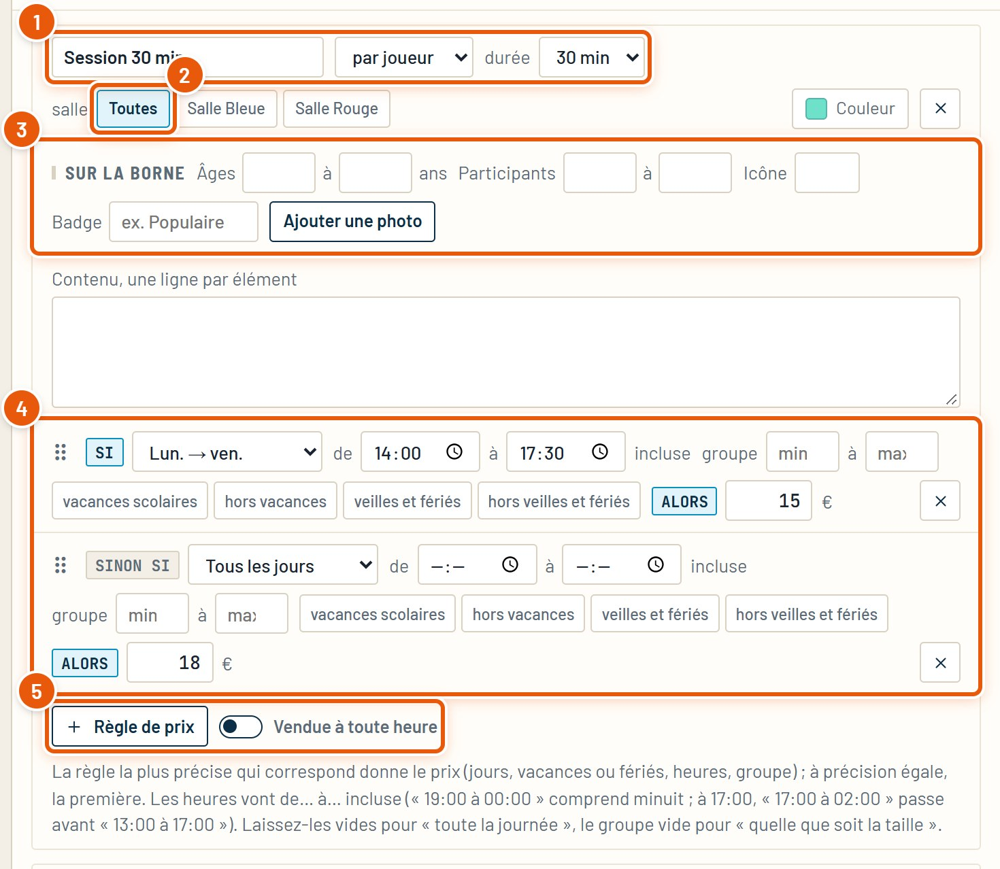
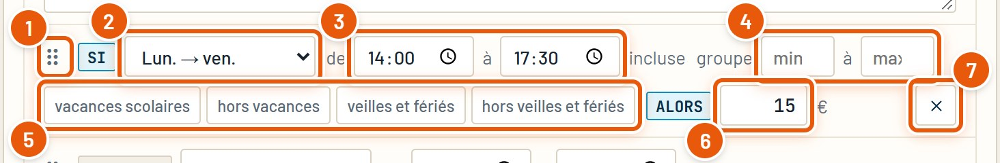
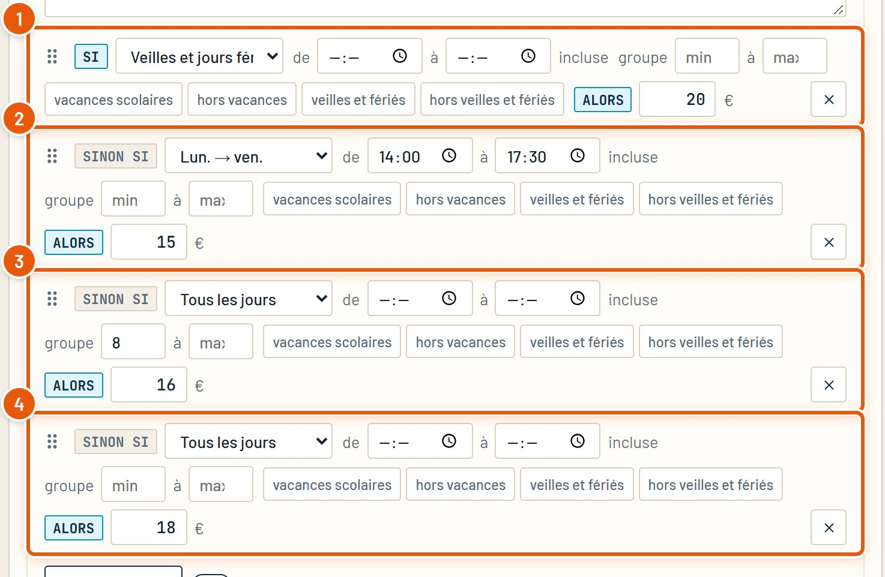
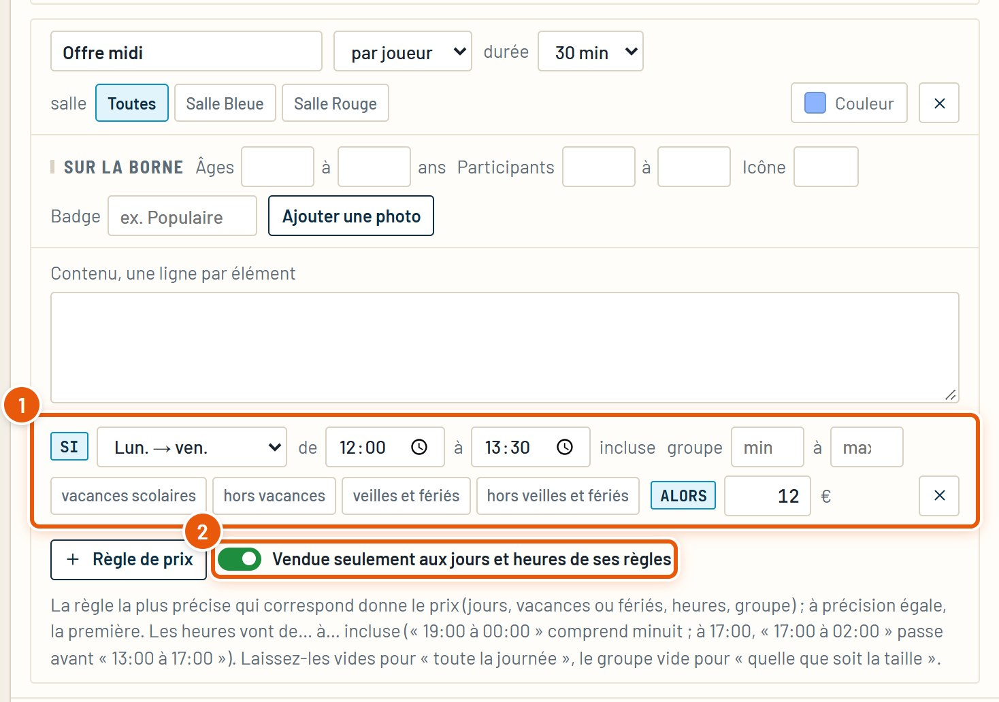
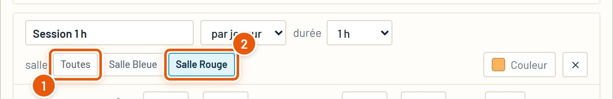
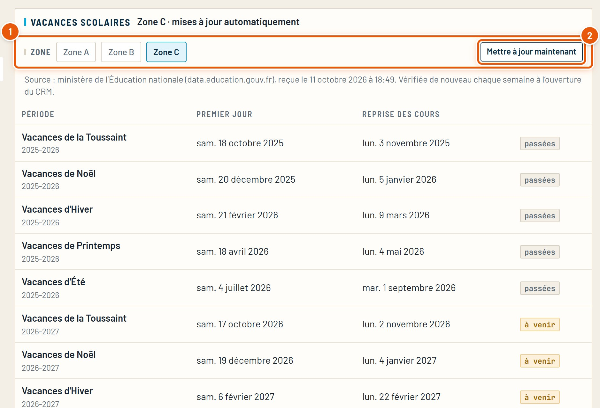
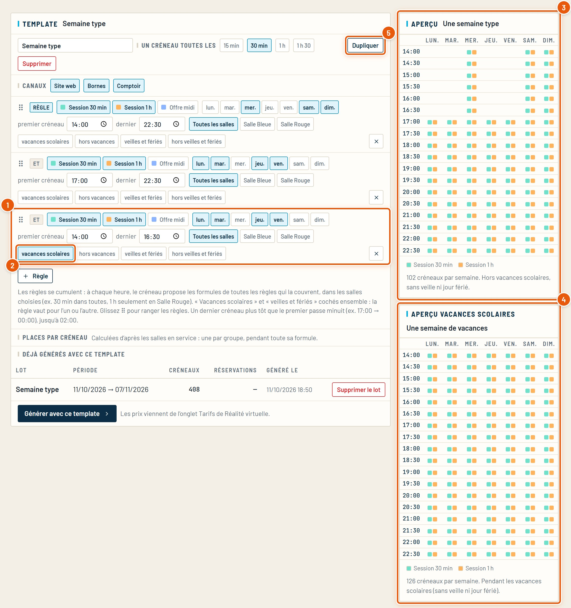
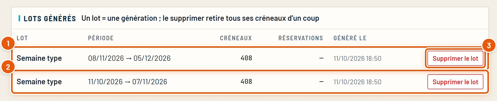
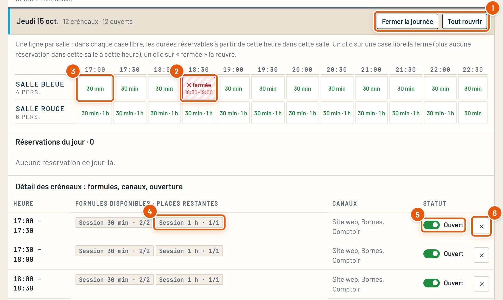
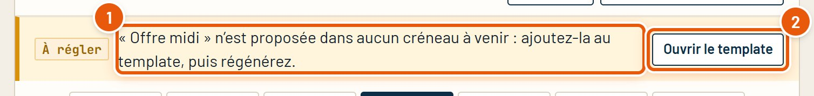

Guide détaillé
Prix et horaires
Les règles de prix, le calendrier des vacances et des jours fériés, les templates de créneaux, et comment fermer une heure ou une journée.
Octobre 2026SpaceBowling Engine
Guide détaillé
Les règles de prix, le calendrier des vacances et des jours fériés, les templates de créneaux, et comment fermer une heure ou une journée.
Ce guide complète le Guide général. Il reprend le même exemple, la Réalité virtuelle (Salle Bleue, Salle Rouge, Session 30 min et Session 1 h), et va plus loin sur les prix et les horaires.
Ce qu’il faut regarder est entouré en orange et numéroté. Les tableaux « Option » disent ce que fait chaque choix et quand le prendre.
Le même calcul sert partout : site, bornes et comptoir. Un client ne voit jamais deux prix différents pour le même créneau.
Session 30 min, 4 joueurs, un mardi à 15 h. La règle « du lundi au vendredi de 14:00 à 17:30 » correspond et elle est plus précise que « tous les jours » : 15 € par joueur, soit 60 €.
Si aucune règle ne correspond, la formule prend le prix de sa première règle. Sauf si elle est « vendue seulement aux jours et heures de ses règles » : elle n’est alors pas proposée du tout (chapitre 5).
Menu de gauche › l’activité › onglet Tarifs. Chaque formule a son cadre.

Un prix modifié ici s’applique aussitôt aux nouvelles réservations, partout. Les réservations déjà prises gardent le prix convenu.
Une règle dit : « SI c’est tel jour, à telle heure, pour un groupe de telle taille, ALORS le prix est… ». Tout ce qu’on laisse vide veut dire « peu importe ».

Quand plusieurs règles correspondent, le CRM prend la plus précise. À précision égale, la première de la liste.
La précision se compte simplement : un point pour chaque condition remplie. Des jours (autres que « Tous les jours »), des heures, un minimum de groupe, un maximum de groupe, une case vacances ou fériés. Les veilles et jours fériés comptent deux points.

| Réservation | Règles qui correspondent | Prix par joueur |
|---|---|---|
| Mardi 15 h, 4 joueurs | 2 et 4 | 15 € (règle 2) |
| Mardi 15 h, 10 joueurs | 2, 3 et 4 | 15 € (règle 2, plus précise que la 3) |
| Samedi 15 h, 10 joueurs | 3 et 4 | 16 € (règle 3) |
| Samedi 15 h, 4 joueurs | 4 | 18 € |
| Lundi de Pâques 15 h, 4 joueurs | 1, 2 et 4 | 20 € : les règles 1 et 2 ont 2 points, la 1 est en premier |
À égalité, l’ordre compte. Mettez en haut de la liste les règles « exceptionnelles » (fériés, vacances, offres) et en bas la règle « tous les jours », qui sert de prix par défaut.
Par défaut, une formule se vend à toutes les heures des créneaux. On peut la limiter aux jours et heures de ses règles : pratique pour une offre ponctuelle.

La formule doit aussi être dans les créneaux : ajoutez-la au template (chapitre 8), sinon une alerte « À régler » le rappelle (chapitre 11).
Avec plusieurs salles, une formule peut n’exister que dans certaines. C’est ainsi qu’on donne à chaque salle sa durée et son prix.

Si chaque formule n’existe que dans une seule salle (une durée et un prix par salle), gardez l’attribution Automatique : le client choisit sa formule, la salle suit. « Au choix du client » sert quand le client doit choisir une salle avant tout.
Paramétrage › Calendrier. Rien à saisir : les dates viennent toutes seules. Elles servent aux règles de prix et aux templates.

Juste en dessous, les jours fériés et leurs veilles sont calculés pour plusieurs années (dates fixes, lundi de Pâques, Ascension, lundi de Pentecôte).
Le pont de l’Ascension ne compte pas comme des vacances. Pour un tarif spécial ce jour-là, utilisez « Veilles et jours fériés » ou des jours personnalisés.
Générateur de créneaux › Templates. Rappel : un template est une semaine type faite de règles qui s’additionnent. Ici, on ajoute un horaire de vacances.

Les règles s’additionnent : à chaque heure, le créneau propose les formules de toutes les règles qui la couvrent. Pour fermer un horaire, on ne l’« enlève » pas : on fait en sorte qu’aucune règle ne le contienne.
Un template ne vend rien tant qu’il n’est pas généré sur une période. Générer crée les créneaux ; c’est eux que le site et les bornes proposent.

Panne, ménage, privatisation, jour férié : on ferme sans toucher au template. Fiche de l’activité › onglet Créneaux, choisissez le jour.

Fermer ne supprime aucune réservation déjà prise : elle reste, et l’équipe la voit dans la liste du jour. Les bornes et le site suivent la fermeture aussitôt.
En haut de l’onglet Créneaux, une alerte orange apparaît quand quelque chose empêche de vendre. Elle dit quoi faire.

Renommer une formule dans les Tarifs renomme aussi ses templates et ses créneaux déjà générés : pas d’alerte, rien à refaire.
Les cas les plus courants, et où regarder.
| Ce que vous voyez | À vérifier |
|---|---|
| Le prix affiché n’est pas le bon | Quelle règle gagne (chapitre 4) : comptez les points, puis l’ordre. Les heures « à » sont comprises. |
| Le tarif de vacances ne s’applique pas | La zone du calendrier (chapitre 7). La règle a bien « Vacances scolaires » (jours ou case). |
| Une formule n’est jamais proposée | Elle est dans le template et les créneaux sont regénérés. Si elle est « vendue seulement… », l’heure demandée est dans ses règles. |
| Plus aucune heure en ligne | Il reste des créneaux à venir (alerte « Aucun créneau à venir »). Prolongez avec une nouvelle génération. |
| Un horaire de soirée s’arrête à minuit | Dernier créneau plus tôt que le premier pour passer minuit (00:30, 01:00…). |
| Un jour reste ouvert alors qu’on est fermé | Retirez ce jour de toutes les règles du template et regénérez, ou fermez la journée ponctuellement (chapitre 10). |
Après un changement de prix, rien à regénérer. Après un changement d’horaires (template), regénérez la période concernée.
Tous les guides du CRM, refaits à partir du vrai logiciel. Ils se trouvent dans le dossier docs.